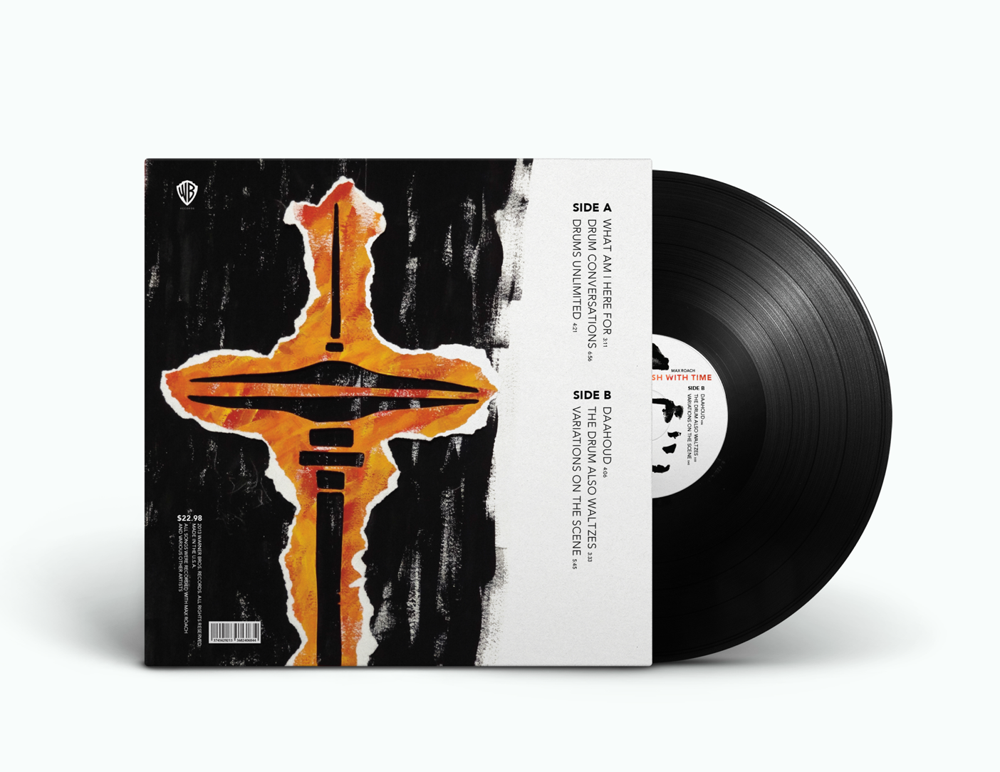

Profile : Clash With Time Album
A case study to create a compilation album for Jazz great Max Roach. A drummer who played with an obsession for cymbals, with a humanly-flawed precision, and flagrant bending of time signatures. I drew from these conclusions for the title and illustration approach. Flawed renderings from stencils which feel truer, in part because they capture the work of hands.
